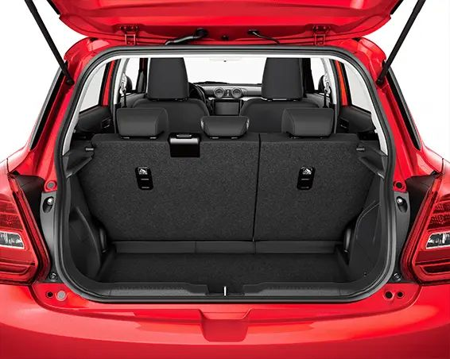

Suzuki Swift
Suzuki Swift
Otthonos utastér
A járműtervezés fejlődésének köszönhető, hogy a kompaktabb külső méretek mellett a Swiftben az utastér és a csomagtér mérete is bővült, így kényelmesebben elférnek utasai, és a csomagok számára is bőséges hely áll rendelkezésre. Ebből a szögből jól látszik, hogy a sportos hangulat jegyében a középkonzolt enyhén a vezető felé fordították.
Minden belefér

A kompakt karosszéria tágas belső teret rejt az utasok és csomagjaik számára, így még könnyebben űzheti kedvenc hobbijait, hiszen mindent magával vihet, amire csak szüksége van.
A praktikus és variálható csomagtartó többféle módon használható:
- Megnövelt csomagtér:
A Swift csomagtartója már alapesetben is 55 literrel nagyobb a korábbinál, a 265 literes raktérben minden csomagja elfér. - Egyszerűen bővíthető:
Az osztottan dönthető hátsó támla előredöntésével úgy szállíthat hosszabb tárgyakat, hogy a hátsó ülésekről sem kell lemondania. - Határtalan kapacitás:
A hátsó ülések előredöntésével a nagyobb szállítmányok sem jelentenek akadályt az egyszerűen pakolható raktér számára.